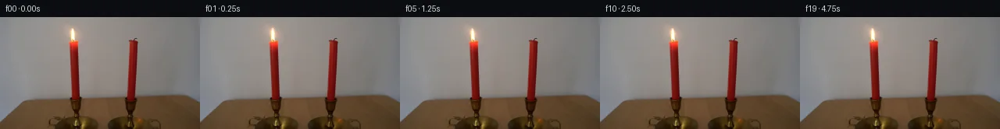

![首帧]()

Round 00
2026-11-05T05:45:39.993206+00:00像素候选变化代码 +194/−0inspection 更新
pixels ba1cd2f921a9c39b · code 88e5fc2364119c21
查看本轮 generate.py 真实 diff
--- previous/generate.py +++ current/generate.py @@ -0,0 +1,194 @@ +"""Photographic candle continuation using only local, deterministic pixel operations.""" +from pathlib import Path +import json + +import numpy as np +from PIL import Image, ImageDraw +from scipy.ndimage import map_coordinates, gaussian_filter1d + +from artifact_io import save + + +ROOT = Path(__file__).resolve().parent +COUNT = 20 +FPS = 4 + +# Small, anchored still-air flame fluctuations. Entries are the twenty samples. +TIP_LEAN = np.array([ + 0, .25, .50, .20, 0, -.45, -.60, -.10, .10, .55, + .10, 0, -.55, -.15, 0, .50, .12, 0, -.40, -.12, +]) +HEIGHT = np.array([ + 1, 1.035, 1.070, 1.020, .975, 1, .990, 1.010, 1.060, 1.020, + 1, .970, .985, 1.010, 1.060, 1.025, 1, .980, .990, 1.010, +]) +WIDTH = np.array([ + 1, 1.010, .980, 1, .980, .960, .940, .980, 1.030, 1.020, + 1, .970, .980, 1, 1.010, 1, .980, .960, .980, 1, +]) +INTENSITY = np.array([ + 1, 1.020, 1.015, .995, .985, 1.010, .990, 1, 1.020, .990, + 1.010, .985, 1, .990, 1.015, 1, 1.010, .985, 1, 1, +]) + + +def smoothstep(value): + z = np.clip(value, 0.0, 1.0) + return z * z * (3.0 - 2.0 * z) + + +def flame_light(source): + """Estimate only the light around the flame, from neighboring wall pixels. + + The grayscale wall estimate is a per-row interpolation between two strips. + It is used only to separate the local light from the photograph. The actual + output retains source background texture, rather than replacing it with this + estimated field. A feather ends strictly above the candle and wick. + """ + yy, xx = np.mgrid[:144, :256].astype(np.float64) + left = np.median(source[:, 73:78], axis=1) + right = np.median(source[:, 111:116], axis=1) + left = gaussian_filter1d(left, 1.3, axis=0) + right = gaussian_filter1d(right, 1.3, axis=0) + blend = np.clip((xx - 75.0) / 38.0, 0.0, 1.0)[..., None] + wall = left[:, None, :] * (1.0 - blend) + right[:, None, :] * blend + + # The source flame is ~16 px tall, based at (94, 29). The taper's top and + # wick remain entirely source pixels. The moving part fades out by y=29. + window = ( + smoothstep((xx - 78.0) / 7.0) + * smoothstep((110.0 - xx) / 7.0) + * smoothstep((yy - 4.0) / 6.0) + * smoothstep((29.0 - yy) / 3.0) + ) + light = np.maximum(source - wall, 0.0) * window[..., None] + # Subtracting and adding the light yields the exact original at rest. + return light, yy, xx, window + + +def make_frames(source): + original = source.astype(np.float64) + light, yy, xx, window = flame_light(original) + frames = [source.copy()] + fixed_anchor_y = 29.0 + fixed_anchor_x = 94.0 + + # The deformation weakens close to the wick so that the base does not slide. + elevated = np.maximum((fixed_anchor_y - yy) / 16.0, 0.0) + anchored = smoothstep((fixed_anchor_y - yy) / 5.0) + for t in range(1, COUNT): + stretch = 1.0 + (HEIGHT[t] - 1.0) * anchored + source_y = fixed_anchor_y - (fixed_anchor_y - yy) / stretch + local_width = 1.0 + (WIDTH[t] - 1.0) * anchored + lean = TIP_LEAN[t] * elevated ** 1.3 * anchored + source_x = fixed_anchor_x + (xx - fixed_anchor_x - lean) / local_width + moved_light = np.stack([ + map_coordinates(light[..., channel], [source_y, source_x], + order=1, mode="constant", cval=0.0, prefilter=False) … diff truncated; 107 more lines …